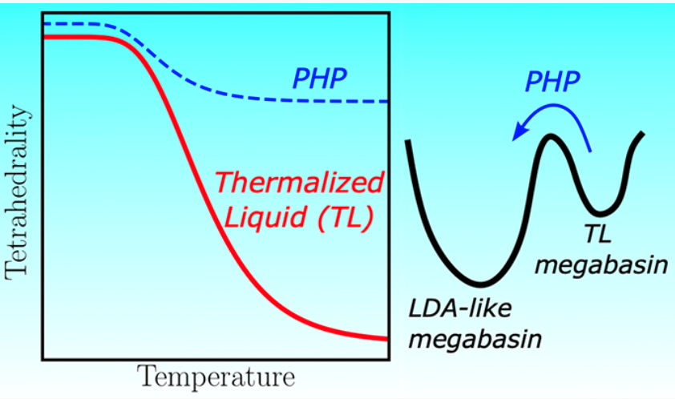
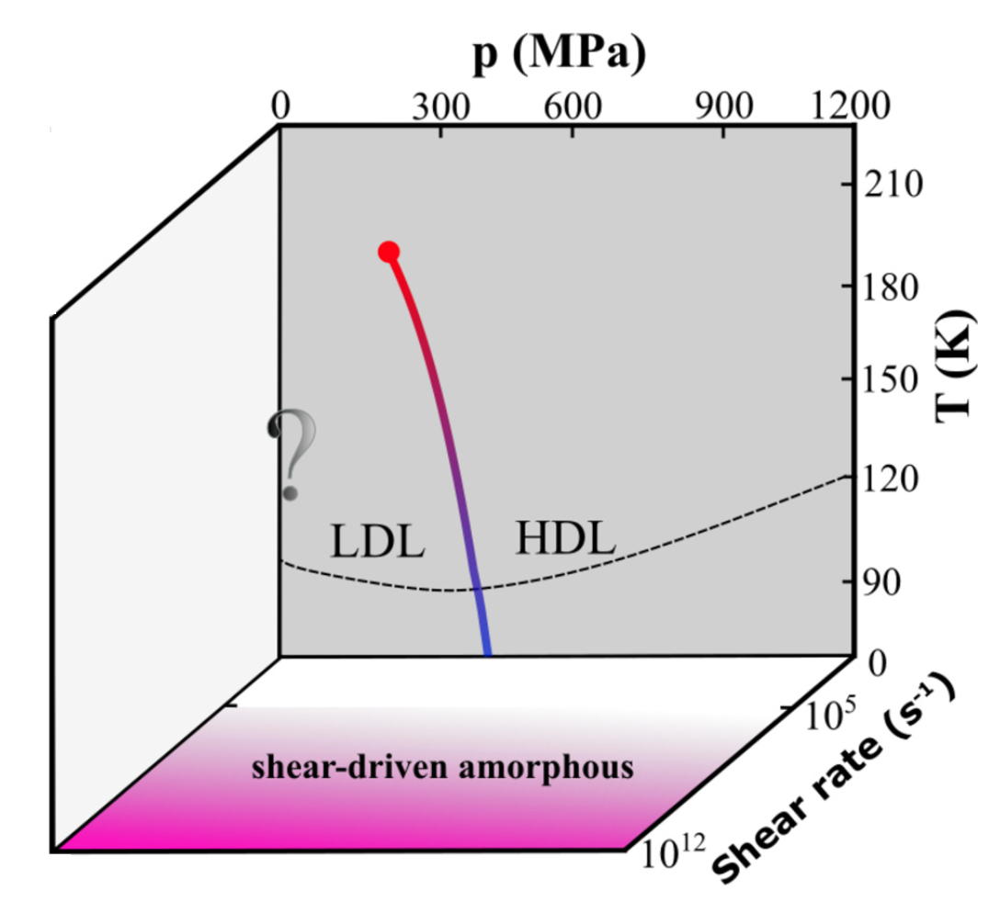
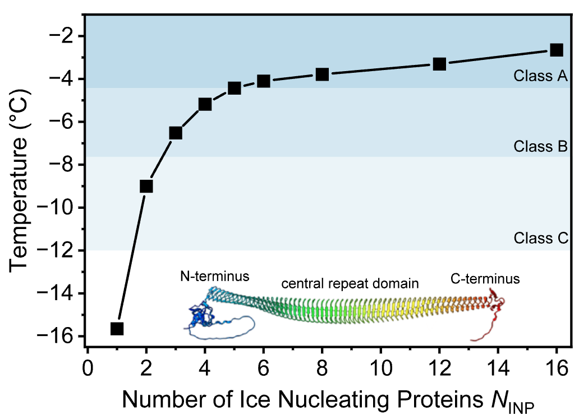
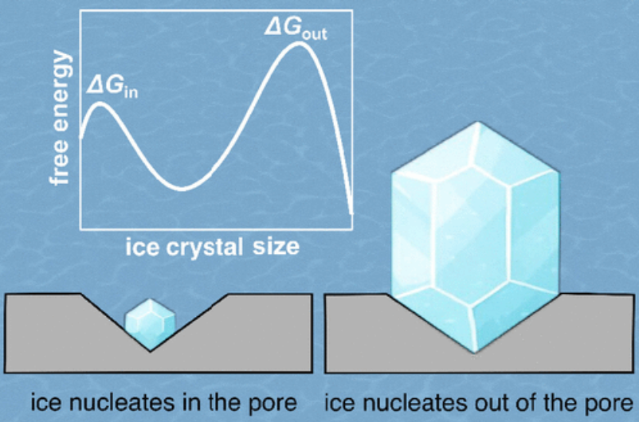
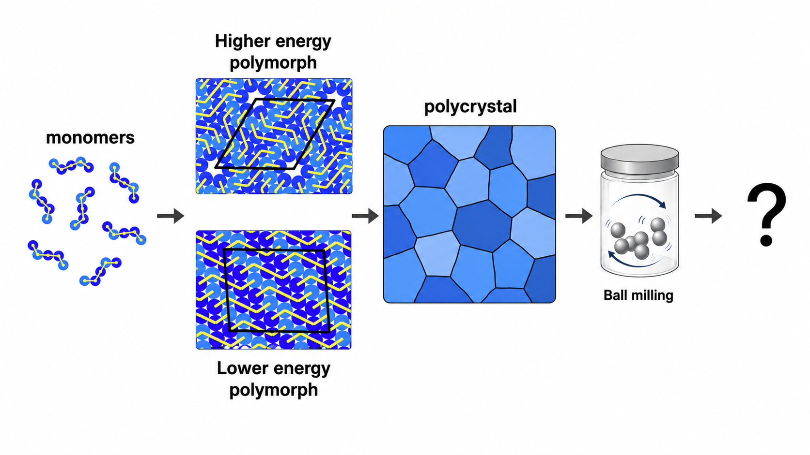

Academic Background
Postdoctoral Researcher, University of Utah, USA (2021–2026)
Ph.D. in Physics, University of Campinas (UNICAMP), Brazil (2017–2021)
M.S. in Physics, University of Campinas (UNICAMP), Brazil (2015–2017)
B.S. in Physics, Federal Fluminense University (UFF), Brazil (2010–2015)
Visiting Research Program, University of Manitoba, Canada (2014)
Postdoctoral Research
During my postdoc at the University of Utah, I studied the thermodynamics, kinetics, and molecular mechanisms of ice formation. I used theory and simulation to investigate how ice nucleates spontaneously in supercooled water (homogeneous nucleation) and how proteins from bacteria, fungi, and lichens or surface features such as pores can promote ice formation (heterogeneous nucleation).
I also studied water’s phase behavior, including transformations between different forms of amorphous ice, and examined how supercooled water relaxes toward equilibrium. My work on water freezing has applications in atmospheric science and cryopreservation, while my research on relaxation addresses the physics of metastable liquids.
I co-authored papers on this work in The Journal of Physical Chemistry Letters, Proceedings of the National Academy of Sciences, and Journal of the American Chemical Society. See my publication list for details.




I also used molecular simulations to study how 2D molecular crystals respond to mechanical stress. Using models of chiral molecules, I investigated how deformation can drive a crystal to adopt a different crystal structure (a polymorphic transformation) or lose its long-range order (amorphization). These changes are relevant to pharmaceutical manufacturing, where processes such as ball milling subject crystals to mechanical stress.
